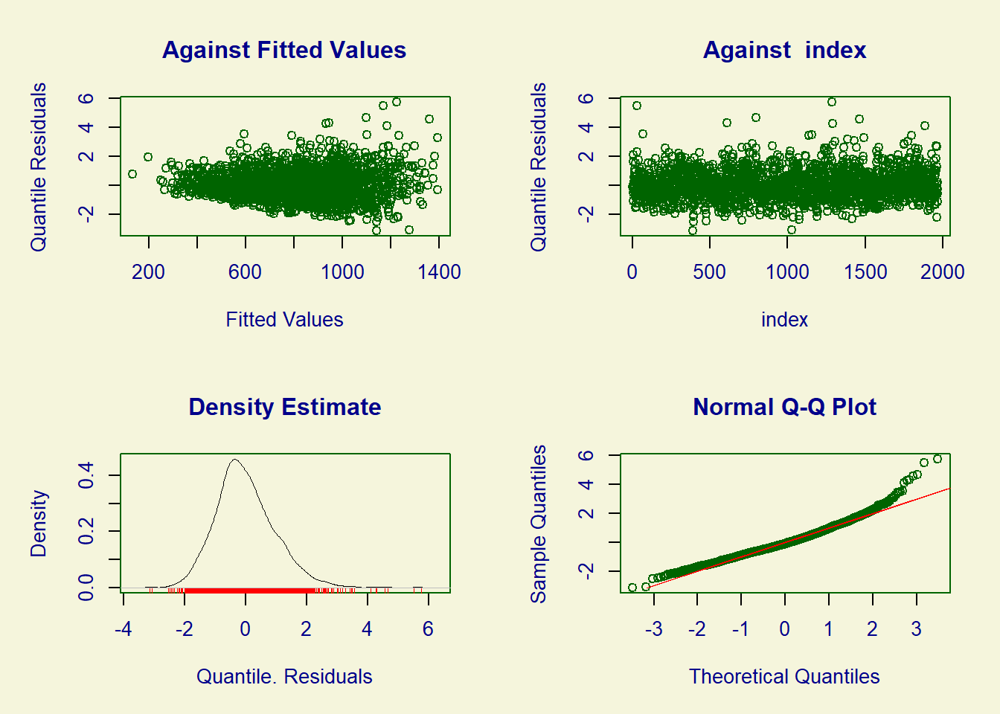

Aula 03/08 - Cesar
Este exemplo tem por objetivo motivar o uso de GAMLSS e apresentar alguns recursos implementados no pacote gamlss.
require(gamlss) # Carregando o pacote gamlss.
require(gamlss.demo)
options(device = 'x11')
data(rent) # Dados sobre aluguéis de imóveis em Munique, 1980.Vamos considerar para a análise o valor do aluguel dos imóveis (R)além de quatro covariáveis: Fl, A, H e loc.
Análise exploratória
Inicialmente, vamos construir alguns gráficos para explorar as relações entre as variáveis.
par(mfrow = c(2,2), mar = c(4,4,2,2), las = 1)
plot(R ~ Fl, data = rent, col = 'blue', cex = 0.8)
plot(R ~ A, data = rent, col = 'blue', cex = 0.8)
plot(R ~ H, data = rent, col = 'lightblue', cex = 0.8)
plot(R ~ loc, data = rent, col = 'lightblue', cex = 0.8)Alguns comentários: - O valor do aluguel parece aumentar conforme a área do imóvel. Além disso, observa-se também que a variação dos preços de aluguel aumenta conforme a área.
Com relação ao ano de construção, não parece haver uma alteração, em termos de valor mediano, até o ano de 1960. A partir de então nota-se um ligeiro aumento.
Imóveis com aquecimento central (H=0) apresentam maior mediana para os preços de aluguel em relação aos que não tem (H=1). A distribuição dos valores de aluguel, em ambos os grupos, apresenta assimetria (á direita). Além disso, a variação é maior no grupo com maior mediana.
Finalmente, os preços de aluguel apresentam maior mediana para a região “acima da média”, seguida pelas regiões “na média” e “abaixo da média”. Nota-se, novamente, assimetria nas distribuições dos preços de aluguel em cada grupo e variância não constante.
Modelo 1: Modelo Linear
Todos os modelos serão ajustados usando a função gamlss da biblioteca gamlss. Antes de mais nada, vamos consultar sua documentação.
Para ajustar o modelo de regressão linear, precisamos especificar a família normal (NO).
## GAMLSS-RS iteration 1: Global Deviance = 28159
## GAMLSS-RS iteration 2: Global Deviance = 28159## (Intercept) Fl A H1 loc2
## -2775.038803 8.839445 1.480755 -204.759562 134.052349
## loc3
## 209.581472Mesmo modelo usando função lm
Se ajustássemos usando a função lm…
## (Intercept) Fl A H1 loc2
## -2775.038803 8.839445 1.480755 -204.759562 134.052349
## loc3
## 209.581472os resultados seriam os mesmos.
Vamos avaliar o resumo do ajuste e alguns gráficos para os resíduos. Uma observação importante: o pacote gamlss utiliza, como padrão, os resíduos quantílicos aleatorizados, que t~em distribuição normal sob a suposição de que o modelo ajustado é correto.
## ******************************************************************
## Family: c("NO", "Normal")
##
## Call: gamlss(formula = R ~ Fl + A + H + loc, family = NO,
## data = rent)
##
## Fitting method: RS()
##
## ------------------------------------------------------------------
## Mu link function: identity
## Mu Coefficients:
## Estimate Std. Error t value Pr(>|t|)
## (Intercept) -2775.0388 470.1352 -5.903 4.20e-09 ***
## Fl 8.8394 0.3370 26.228 < 2e-16 ***
## A 1.4808 0.2385 6.208 6.55e-10 ***
## H1 -204.7596 18.9858 -10.785 < 2e-16 ***
## loc2 134.0523 25.1430 5.332 1.09e-07 ***
## loc3 209.5815 27.1286 7.725 1.76e-14 ***
## ---
## Signif. codes: 0 '***' 0.001 '**' 0.01 '*' 0.05 '.' 0.1 ' ' 1
##
## ------------------------------------------------------------------
## Sigma link function: log
## Sigma Coefficients:
## Estimate Std. Error t value Pr(>|t|)
## (Intercept) 5.73165 0.01594 359.7 <2e-16 ***
## ---
## Signif. codes: 0 '***' 0.001 '**' 0.01 '*' 0.05 '.' 0.1 ' ' 1
##
## ------------------------------------------------------------------
## No. of observations in the fit: 1969
## Degrees of Freedom for the fit: 7
## Residual Deg. of Freedom: 1962
## at cycle: 2
##
## Global Deviance: 28159
## AIC: 28173
## SBC: 28212.1
## ******************************************************************Perceba que no summary aparece a estimativa de \(\sigma\) como 5.73, esse valor é o \(log\) de \(\sigma\), para achar seu valor real, apenas é feito a exponenciação. \(e^{5.73} = 308\)
Segundo o modelo ajustado, as quatro variáveis apresentam efeito significativo no preço de aluguel.

## ******************************************************************
## Summary of the Quantile Residuals
## mean = 4.959554e-13
## variance = 1.000508
## coef. of skewness = 0.7470097
## coef. of kurtosis = 4.844416
## Filliben correlation coefficient = 0.9859819
## ******************************************************************Claramente o modelo não ajusta bem os dados.
No gráfico do canto superior esquerdo fica evidente que os resíduos não tem dispersão constante, de forma que a variância aumenta conforme a média.
Podemos observar também, pelos quatro gráficos, que os resíduos têm distribuição assimétrica.
O gráfico quantil-quantil normal deixa nítido que os resíduos não apresentam distribuição normal.
## 1
## 308.4768Estimativa do desvio padrão, assumido constante a todas as observações.
Vamos plotar os resíduos versus a idade do imóvel, com o objetivo de identificar alguma relação não explicada pelo modelo.
Podemos notar que os resíduos aumentam (em média) a partir de 1960. O termo linear, considerado no ajuste do modelo, parece não ser suficiente para explicar a relação entre os preços de aluguel e o ano de construção do imóvel.
Modelo 2: Modelo Linear Generalizado
Ajuste de um modelo linear generalizado com resposta gamma.
O objetivo aqui é acomodar a assimetria nos dados e variância não constante no ajuste do modelo.
## GAMLSS-RS iteration 1: Global Deviance = 27764.59
## GAMLSS-RS iteration 2: Global Deviance = 27764.59## (Intercept) Fl A H1 loc2 loc3
## 2.86497701 0.01062319 0.00151005 -0.30007446 0.19076406 0.26408285Se ajustássemos usando a função glm (especificando função de ligação log)
## (Intercept) Fl A H1 loc2
## 2.864943806 0.010623194 0.001510066 -0.300074001 0.190764594
## loc3
## 0.264083376os resultados seriam idênticos.
## df AIC
## mod2 7 27778.59
## mod1 7 28173.00O modelo 2 (resposta gamma) proporciona melhor ajuste aos dados (menor AIC) que o modelo 1.
## ******************************************************************
## Family: c("GA", "Gamma")
##
## Call: gamlss(formula = R ~ Fl + A + H + loc, family = GA,
## data = rent)
##
## Fitting method: RS()
##
## ------------------------------------------------------------------
## Mu link function: log
## Mu Coefficients:
## Estimate Std. Error t value Pr(>|t|)
## (Intercept) 2.8649770 0.5681289 5.043 5.01e-07 ***
## Fl 0.0106232 0.0004128 25.735 < 2e-16 ***
## A 0.0015100 0.0002886 5.232 1.85e-07 ***
## H1 -0.3000745 0.0231153 -12.982 < 2e-16 ***
## loc2 0.1907641 0.0305203 6.250 5.01e-10 ***
## loc3 0.2640828 0.0329197 8.022 1.77e-15 ***
## ---
## Signif. codes: 0 '***' 0.001 '**' 0.01 '*' 0.05 '.' 0.1 ' ' 1
##
## ------------------------------------------------------------------
## Sigma link function: log
## Sigma Coefficients:
## Estimate Std. Error t value Pr(>|t|)
## (Intercept) -0.98220 0.01558 -63.05 <2e-16 ***
## ---
## Signif. codes: 0 '***' 0.001 '**' 0.01 '*' 0.05 '.' 0.1 ' ' 1
##
## ------------------------------------------------------------------
## No. of observations in the fit: 1969
## Degrees of Freedom for the fit: 7
## Residual Deg. of Freedom: 1962
## at cycle: 2
##
## Global Deviance: 27764.59
## AIC: 27778.59
## SBC: 27817.69
## ******************************************************************Novamente, as quatro variáveis apresentam efeito significativo na resposta.

## ******************************************************************
## Summary of the Quantile Residuals
## mean = 0.0004795675
## variance = 1.000657
## coef. of skewness = -0.1079453
## coef. of kurtosis = 3.255464
## Filliben correlation coefficient = 0.9990857
## ******************************************************************Os resíduos para o modelo com resposta gamma apresentam comportamento bem mais satisfatório do que para o modelo com resposta normal. Não se tem mais um padrão de variância não constante, e percebe-se boa aderência à distribuição normal. De qualquer forma, vamos avançar no ajuste e avaliação de outros modelos.
## 1
## 0.3744867Estimativa do parâmetro de escala.
Modelo 3 : Modelo Generalizado Aditivo (GAM)
Ajuste de um modelo linear generalizado com resposta gamma e funções suaves para as variáveis numéricas (Fl e A).
## GAMLSS-RS iteration 1: Global Deviance = 27683.22
## GAMLSS-RS iteration 2: Global Deviance = 27683.22
## GAMLSS-RS iteration 3: Global Deviance = 27683.22A função pb() é a implementação do suavizador P-splines no gamlss.
## df AIC
## mod3 11.21547 27705.65
## mod2 7.00000 27778.59O modelo com termos suaves produziu menor AIC do que o glm ajustado anteriormente, produzindo, portanto, melhor ajuste.
## ******************************************************************
## Family: c("GA", "Gamma")
##
## Call: gamlss(formula = R ~ pb(Fl) + pb(A) + H + loc, family = GA,
## data = rent)
##
## Fitting method: RS()
##
## ------------------------------------------------------------------
## Mu link function: log
## Mu Coefficients:
## Estimate Std. Error t value Pr(>|t|)
## (Intercept) 3.0851197 0.5692315 5.420 6.70e-08 ***
## pb(Fl) 0.0103084 0.0004031 25.573 < 2e-16 ***
## pb(A) 0.0014062 0.0002893 4.861 1.26e-06 ***
## H1 -0.3008111 0.0225869 -13.318 < 2e-16 ***
## loc2 0.1886692 0.0299295 6.304 3.58e-10 ***
## loc3 0.2719856 0.0322862 8.424 < 2e-16 ***
## ---
## Signif. codes: 0 '***' 0.001 '**' 0.01 '*' 0.05 '.' 0.1 ' ' 1
##
## ------------------------------------------------------------------
## Sigma link function: log
## Sigma Coefficients:
## Estimate Std. Error t value Pr(>|t|)
## (Intercept) -1.00196 0.01559 -64.27 <2e-16 ***
## ---
## Signif. codes: 0 '***' 0.001 '**' 0.01 '*' 0.05 '.' 0.1 ' ' 1
##
## ------------------------------------------------------------------
## NOTE: Additive smoothing terms exist in the formulas:
## i) Std. Error for smoothers are for the linear effect only.
## ii) Std. Error for the linear terms maybe are not accurate.
## ------------------------------------------------------------------
## No. of observations in the fit: 1969
## Degrees of Freedom for the fit: 11.21547
## Residual Deg. of Freedom: 1957.785
## at cycle: 3
##
## Global Deviance: 27683.22
## AIC: 27705.65
## SBC: 27768.29
## ******************************************************************Os coeficientes para Fl e A referem-se apenas à parte linear dos efeitos dessas variáveis. Para testar suas significâncias, considerando também a parte não linear, podemos usar a função drop1().
## Single term deletions for
## mu
##
## Model:
## R ~ pb(Fl) + pb(A) + H + loc
## Df AIC LRT Pr(Chi)
## <none> 27706
## pb(Fl) 1.4680 28261 558.59 < 2.2e-16 ***
## pb(A) 4.3149 27798 101.14 < 2.2e-16 ***
## H 1.8445 27862 160.39 < 2.2e-16 ***
## loc 2.0346 27770 68.02 1.825e-15 ***
## ---
## Signif. codes: 0 '***' 0.001 '**' 0.01 '*' 0.05 '.' 0.1 ' ' 1A forma apropriada de avaliar o efeito das variáveis ao usar suavizadores não paramétricos é por meio de gráficos de efeitos.
O eixo vertical representa a média na escala do preditor (log(\(\mu\))). Podemos observar relação praticamente linear com Fl, mas não linear conforme A (praticamente constante até 1960, crescente a partir de então).
Vamos ajustar um modelo alternativo com suavização apenas para o ano de construção do imóvel.
## GAMLSS-RS iteration 1: Global Deviance = 27685.95
## GAMLSS-RS iteration 2: Global Deviance = 27685.95
## GAMLSS-RS iteration 3: Global Deviance = 27685.95## df AIC
## mod3 11.21547 27705.65
## mod3_alt 10.33886 27706.63
## mod2 7.00000 27778.59O AIC ainda é menor para o modelo em que funções suavizadoras são incorporadas para ambas as variáveis, mas a diferença diminuiu consideravelmente, em relação ao modelo sem termos não paramétricos (mod2). As áreas sombreadas correspondem a intervalos de confiança 95%.
## ******************************************************************
## Summary of the Quantile Residuals
## mean = 0.0005312226
## variance = 1.00067
## coef. of skewness = -0.1235641
## coef. of kurtosis = 3.322109
## Filliben correlation coefficient = 0.9989678
## ******************************************************************Um gráfico útil para checar a dequação do ajuste é o worm plot. O worm plot é uma alternativa ao qqplot. O padrão, para o caso em que o modelo está bem ajustado, é os pontos dispersos em torno da linha horizontal, com 95% deles internos as linhas (bandas) tracejadas.
Podemos observar que os pontos não estão dispersos conforme o esperado, com acentuada curvatura na parte esquerda do gráfico.
Modelo 4: Modelo Generalizado Aditivo Duplo Gamma
Ajuste de um modelo linear generalizado com funções suaves para as variáveis numéricas (Fl e A) e inclusão de covariáveis para o parâmetro de dispersão.
Vamos testar duas distribuições: gamma e normal inversa. Primeiro a distribuição Gamma.
mod4 <- gamlss(R ~ pb(Fl) + pb(A) + H + loc,
sigma.fo =~ pb(Fl) + pb(A) + H + loc, family = GA, data = rent)## GAMLSS-RS iteration 1: Global Deviance = 27572.14
## GAMLSS-RS iteration 2: Global Deviance = 27570.29
## GAMLSS-RS iteration 3: Global Deviance = 27570.28
## GAMLSS-RS iteration 4: Global Deviance = 27570.28## (Intercept) pb(Fl) pb(A) H1 loc2
## 2.884457086 0.010540239 0.001497742 -0.291892320 0.193868835
## loc3
## 0.273432597Gráfico de efeitos para a média (parâmetro de locação). Percebe-se efeito aproximadamente linear, na escala do preditor, para Fl. Para H, verificamos efeito aproximadamente constante até 1960, com elevação partir de então.

Gráfico de efeitos para o parâmetro de escala (dispersão). Observa-se efeito claramente não linear de Fl e A na dispersão. Além disso, maior efeito é verificado para casas com localização 1, seguida pelas localizações II e III.
Modelo 5: Modelo Generalizado Aditivo Duplo Normal Inversa
mod5 <- gamlss(R ~ pb(Fl) + pb(A) + H + loc,
sigma.fo =~ pb(Fl) + pb(A) + H + loc,
family = IG, data = rent)## GAMLSS-RS iteration 1: Global Deviance = 27675.74
## GAMLSS-RS iteration 2: Global Deviance = 27672.97
## GAMLSS-RS iteration 3: Global Deviance = 27673
## GAMLSS-RS iteration 4: Global Deviance = 27673.01
## GAMLSS-RS iteration 5: Global Deviance = 27673.01
## GAMLSS-RS iteration 6: Global Deviance = 27673.02## (Intercept) pb(Fl) pb(A) H1 loc2
## 3.120747376 0.010644097 0.001370653 -0.289891877 0.195197343
## loc3
## 0.274238647Gráfico de efeitos para a média (parâmetro de locação).
Gráfico de efeitos para o parâmetro de escala (dispersão).
## df AIC
## mod4 22.25035 27614.78
## mod3 11.21547 27705.65
## mod5 21.82318 27716.66O modelo mod4 produziu melhor ajuste (menor valor de AIC). Mod 4 é o modelo com resposta gamma, função suave para Fl e A e modelagem do parâmetro de dispersão.
## Single term deletions for
## sigma
##
## Model:
## ~pb(Fl) + pb(A) + H + loc
## Df AIC LRT Pr(Chi)
## <none> 27615
## pb(Fl) 4.02694 27631 24.683 5.997e-05 ***
## pb(A) 3.87807 27659 52.167 1.067e-10 ***
## H 0.88335 27615 1.866 0.14788
## loc 2.03694 27619 8.036 0.01872 *
## ---
## Signif. codes: 0 '***' 0.001 '**' 0.01 '*' 0.05 '.' 0.1 ' ' 1Todas as covariáveis, exceto H, apresentam efeito significativo no parâmetro de dispersão. Vamos atualizar o modelo, excluindo o efeito não significativo.
## GAMLSS-RS iteration 1: Global Deviance = 27574.12
## GAMLSS-RS iteration 2: Global Deviance = 27572.16
## GAMLSS-RS iteration 3: Global Deviance = 27572.15
## GAMLSS-RS iteration 4: Global Deviance = 27572.15
## GAMLSS-RS iteration 5: Global Deviance = 27572.15Vamos usar o worm plot para diagnóstico do ajuste.
O gráfico não reflete um ajuste satisfatório, com padrão na forma de U invertido.
Modelo 6 e 7 : Modelo Generalizado aditivo para locação, escala e forma
Ajuste de um modelo generalizado aditivo para locação, escala e forma com resposta Box-Cox Cole and Green.
A família gamlss compreende diversas distribuições, com até quatro parâmetros, que permitem modelar dados com diferentes níveis de dispersão, assimetria e curtose. Nesta aplicação vamos considerar a distribuição Box-Cox Cole and Green (BCCGo).
Vamos considerar a distribuição BCCGo com parâmetros \(\mu\) = 1, sigma = 0.1, \(\nu\) = 2.5.
## [1] 0.3640937## [1] 0.9895491## [1] 1.050513Vamos simular 100 valores aleatórios da distribuição Box-Cox Cole and Green, plotar o histograma dos valores simulados e sobrepor a curva da função densidade de probabilidade do modelo usado na simulação.
set.seed(87) # Fixando a semente.
x <- rBCCGo(n = 100, mu = 1, sigma = 0.1, nu = 2.5) # Gerando 100 valores aleatórios.
hist(x, probability = TRUE, ylim = c(0,4.5))
curve(dBCCGo(x, mu = 1, sigma = 0.1, nu = 2.5), from = 0.6, to = 1.3,
add = TRUE, col = 'red', lwd = 2)## <Tcl>Voltemos à análise dos dados dos preços de aluguel de imóveis. Vamos ajustar dois modelos: o primeiro (mod6) não incluindo covariáveis na modelagem do parâmetro de forma (\(\nu\)). No segundo (mod7) as mesmas covariáveis usadas para modelar \(\mu\) são usadas também para \(\nu\).
Modelos 6 e 7
mod6 <- gamlss(R ~ pb(Fl) + pb(A) + H + loc,
sigma.fo =~ pb(Fl) + pb(A) + loc, family = BCCGo, data = rent)## GAMLSS-RS iteration 1: Global Deviance = 27631.55
## GAMLSS-RS iteration 2: Global Deviance = 27570.62
## GAMLSS-RS iteration 3: Global Deviance = 27568.35
## GAMLSS-RS iteration 4: Global Deviance = 27568.18
## GAMLSS-RS iteration 5: Global Deviance = 27568.16
## GAMLSS-RS iteration 6: Global Deviance = 27568.15
## GAMLSS-RS iteration 7: Global Deviance = 27568.15mod7 <- gamlss(R ~ pb(Fl) + pb(A) + H + loc,
sigma.fo =~ pb(Fl) + pb(A) + loc,
nu.fo =~ pb(Fl) + pb(A) + H + loc, family = BCCGo, data = rent)## GAMLSS-RS iteration 1: Global Deviance = 27621.52
## GAMLSS-RS iteration 2: Global Deviance = 27556.69
## GAMLSS-RS iteration 3: Global Deviance = 27554.43
## GAMLSS-RS iteration 4: Global Deviance = 27554.28
## GAMLSS-RS iteration 5: Global Deviance = 27554.27
## GAMLSS-RS iteration 6: Global Deviance = 27554.27
## GAMLSS-RS iteration 7: Global Deviance = 27554.27Vamos comparar os ajustes usando o AIC.
## df AIC
## mod7 27.46932 27609.21
## mod6 21.57556 27611.30
## mod4 22.25035 27614.78O modelo mod7 produziu menor valor de AIC, indicando, portanto, melhor ajuste. Nesse caso, além de locação e escala, também a forma da distribuição varia conforme os valores das covariáveis.
Vamos avaliar possível retirada dos termos no preditor do parâmetro de forma em mod7.
## Single term deletions for
## nu
##
## Model:
## ~pb(Fl) + pb(A) + H + loc
## Df AIC LRT Pr(Chi)
## <none> 27609
## pb(Fl) 1.0214 27607 0.2000 0.6635
## pb(A) 1.7371 27609 3.5228 0.1383
## H 1.1896 27612 5.0545 0.0325 *
## loc 1.8571 27606 0.7560 0.6503
## ---
## Signif. codes: 0 '***' 0.001 '**' 0.01 '*' 0.05 '.' 0.1 ' ' 1para o parâmetro de forma, apenas H resultou em efeito significativo. Vamos ajustar novo modelo, extraindo os demais efeitos do preditor.
## GAMLSS-RS iteration 1: Global Deviance = 27625.99
## GAMLSS-RS iteration 2: Global Deviance = 27561.56
## GAMLSS-RS iteration 3: Global Deviance = 27559.22
## GAMLSS-RS iteration 4: Global Deviance = 27559.04
## GAMLSS-RS iteration 5: Global Deviance = 27559.01
## GAMLSS-RS iteration 6: Global Deviance = 27559.01
## GAMLSS-RS iteration 7: Global Deviance = 27559.01## df AIC
## mod7_alt 22.87242 27604.75
## mod7 27.46932 27609.21O modelo que contém apenas o efeito de H em \(\nu\) produziu ajuste com menor AIC, e é preferível
Vamos avaliar os gráficos de efeitos.

Vamos proceder com o diagnóstico do ajuste.
## ******************************************************************
## Summary of the Quantile Residuals
## mean = 0.004930176
## variance = 1.000472
## coef. of skewness = -0.02133528
## coef. of kurtosis = 2.928237
## Filliben correlation coefficient = 0.9997195
## ******************************************************************O modelo, aparentemente, se ajusta bem aos dados.
Explorar modelo ajustado
Neste ponto, vamos explorar o modelo ajustado, estimativas e predições. Vamos considerar o último modelo ajustado, mod7_alt.
Vamos estimar os parâmetros para as distribuições dos preços de aluguel em dois cenários.
data_new <- data.frame(Fl = c(52, 82), A = c(1940, 1975), H = c('1', '0'), loc = c('1', '3'))
rownames(data_new) <- c('Imovel 1', 'Imovel 2')data_new armazena características de dois “perfis” distintos de imóveis.
Primeiramente, vamos estimar o preço médio de aluguel.
## new prediction
## New way of prediction in pb() (starting from GAMLSS version 5.0-3)
## New way of prediction in pb() (starting from GAMLSS version 5.0-3)## [1] 5.924498 6.998469Estimativa na escala do preditor (log(\(\mu\))).
## new prediction
## New way of prediction in pb() (starting from GAMLSS version 5.0-3)
## New way of prediction in pb() (starting from GAMLSS version 5.0-3)## [1] 374.0907 1094.9557Estimativa na escala do parâmetro (\(\mu\)).
Agora, de maneira semelhante, para os demais parâmetros do modelo. Para o parâmetro de escala (\(\sigma\)):
## new prediction
## New way of prediction in pb() (starting from GAMLSS version 5.0-3)
## New way of prediction in pb() (starting from GAMLSS version 5.0-3)## [1] -0.8182915 -1.2147652Estimativa na escala do preditor (log(\(\sigma\))).
## new prediction
## New way of prediction in pb() (starting from GAMLSS version 5.0-3)
## New way of prediction in pb() (starting from GAMLSS version 5.0-3)## [1] 0.4411848 0.2967797Estimativa na escala do parâmetro (\(\sigma\)).
Para o parâmetro de forma (\(\nu\)):
## [1] 0.1789127 0.5028816Como a função de ligação é do tipo identidade, a estimativa é a mesma nas escalas do preditor e do parâmetro.
Vamos plotar as curvas das densidades ajustadas para os dois perfis de imóveis.
curve(dBCCGo(x, mu = pmu[1], sigma = psigma[1], nu = pnu[1]),
from = 0, to = 3500, xlab = 'Aluguel', ylab = 'Densidade', col = 'red', lwd = 2)
curve(dBCCGo(x, mu = pmu[2], sigma = psigma[2], nu = pnu[2]),
from = 0, to = 3500, col = 'blue', lwd = 2, add = TRUE)
legend(x = 'topright', legend = c('Imovel 1', 'Imovel 2'), col = c('red', 'blue'), lwd = 2)Probabilidade de um imóvel com valor de aluguel inferior a $500 para cada um dos dois perfis.
## [1] 0.7501413## [1] 0.0145249Probabilidade de um imóvel com valor de aluguel superior a $1000 para cada um dos dois perfis.
## [1] 0.007410492Perfil 1
## [1] 0.6174512Perfil 2
Estimativas dos preços medianos
## [1] 374.0907Perfil 1
## [1] 1094.956Perfil 2
Estimativas dos quantis 75 e 90%
## [1] 499.9069 641.0421Perfil 1
## [1] 1325.040 1550.752Perfil 2